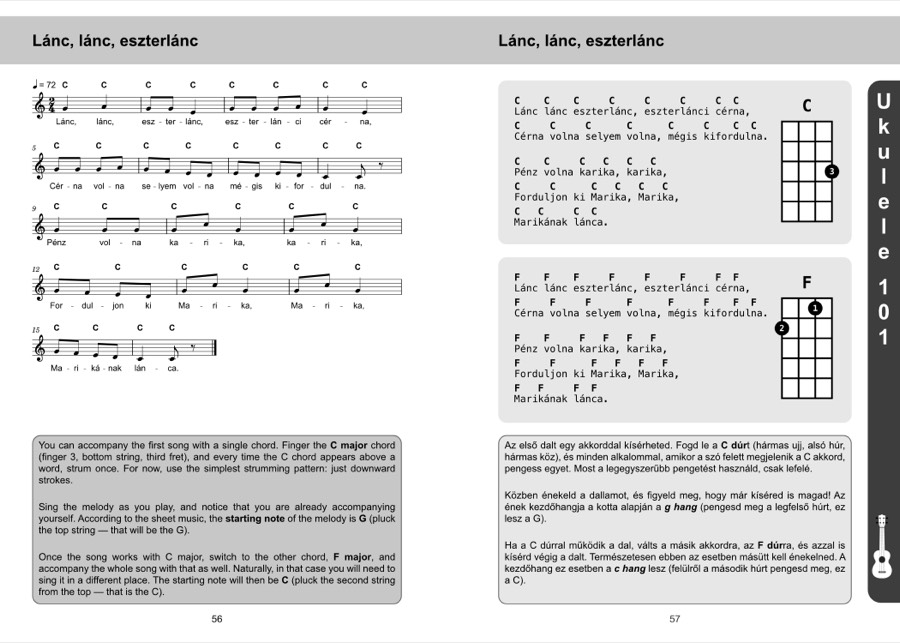

A bilingual Hungarian songbook
Songs from Beyond the Seven Seas
Sing Hungarian — on any instrument, for every occasion.
- 63 songs
- A chord over every beat
- Lies flat on a music stand
- Beginner ukulele course

A book for the stand, not the shelf
63 Hungarian songs — children's songs, folk songs, holiday songs.
- A chord over every beat, so guitar, ukulele, piano or accordion players can accompany them at sight.
- All guidance is bilingual English–Hungarian (the songs themselves are sung in Hungarian).
- The wire-o binding lies flat on a music stand.
- A gentle from-zero ukulele course is included.
- All songs copyright-clean.

Which door is yours?
We sing together
Family, scouts, camp, church: a song for every occasion of the year. The songs are sung in Hungarian — every explanation is in English too, so mixed families and groups can join.
About the bookI've never played an instrument
The ukulele course takes you from zero to your first campfire song.
Start with tuningI already play — give me repertoire
Chords on every beat, the esztam pulse explained, and chord charts for six instruments — including kontra.
Look insideA song for every occasion of the year
These are the songs Hungarian communities in California actually ask for.
- Carnival Season
- March 15th
- Mother's Day
- Father's Day
- August 20th
- October 23rd
- Saint Nicholas
- Christmas
- New Year
Hear the songs
The recordings made from the songs in the book are on our YouTube channel.
More recordings
Endorsements
Hungarian music transcends boundaries—national, cultural, political, instrumental, and even linguistic.
— Kalman Magyar
This much-needed music textbook opens the door, with brilliant simplicity, to the world of ukulele playing and Hungarian songs.
— Etelka Keszei
The book has found its people at Balkan music camp, folk dance festivals, Hungarian scout troops and weekend schools across the West Coast.
Three questions we always get
Is this a ukulele book?
No — it's a songbook for any chord-playing instrument. The ukulele chapter exists so a complete beginner can join in by the end of one camp.
Do I need a guitar?
The chord letters work on guitar, ukulele, piano and accordion — and the back of the book has chord charts for six instruments, including the three-string kontra.
How were the songs chosen?
By ten years of requests: these are the songs Hungarian communities in California actually ask for — one for every occasion of the year, and every one of them copyright-clean.
Not just for guitar. Not only a ukulele book. A songbook for anyone who wants to play or sing along.
Buy the book — $35$35 + $6 US shipping